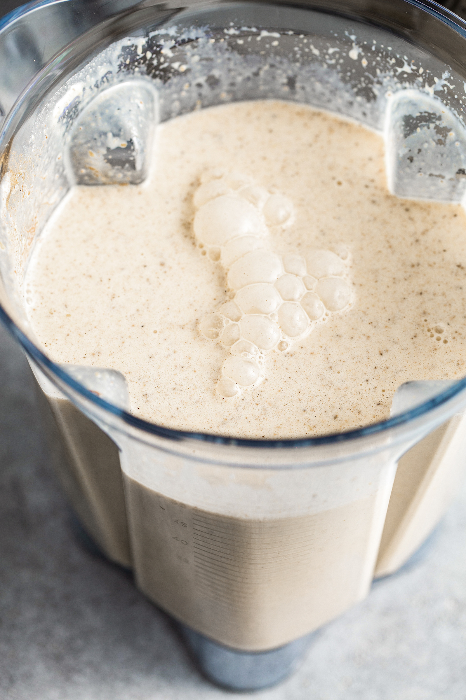

Back to homepage
Coquito
Coquito is a creamy Puerto Rican holiday cocktail made with coconut,
rum, cinnamon, nutmeg, and more. This easy family recipe has been passed down
through the generations. It’s so good you won’t want to share!
Ingredients
- rum
- cinnamon
- Sweetened condensed milk
- Cream of coconut
- Evaporated milk
- ground nutmeg
- Vanilla Extract
- Shredded coconut
- ¾pound ground sirloin
Steps
- To start, we like to soak our rum with cinnamon sticks and raisins (if you are using them) for 24 hours (or up to a week). This is optional but really helps to give your coquito a great depth of flavor.
- Then we gather all the rest of our ingredients and puree them all together in a blender. So you’ll add the coconut milk, sweetened condensed milk, evaporated milk, cream of coconut, vanilla extract, shredded coconut (optional), ground cinnamon, and nutmeg.

- Once everything is pureed, pour the coconut milk mixture into the bottle with the rum (and optional rum raisins) and shake well to combine.

- Chill the coquito for at least 4 hours before serving. This will help to thicken the coquito, but will also help the flavors meld together.
- Pour your chilled coquito into cocktail glasses. You can add a coconut rim before pouring your coquito if you like. Sprinkle some extra ground cinnamon or nutmeg on top, then start sipping.